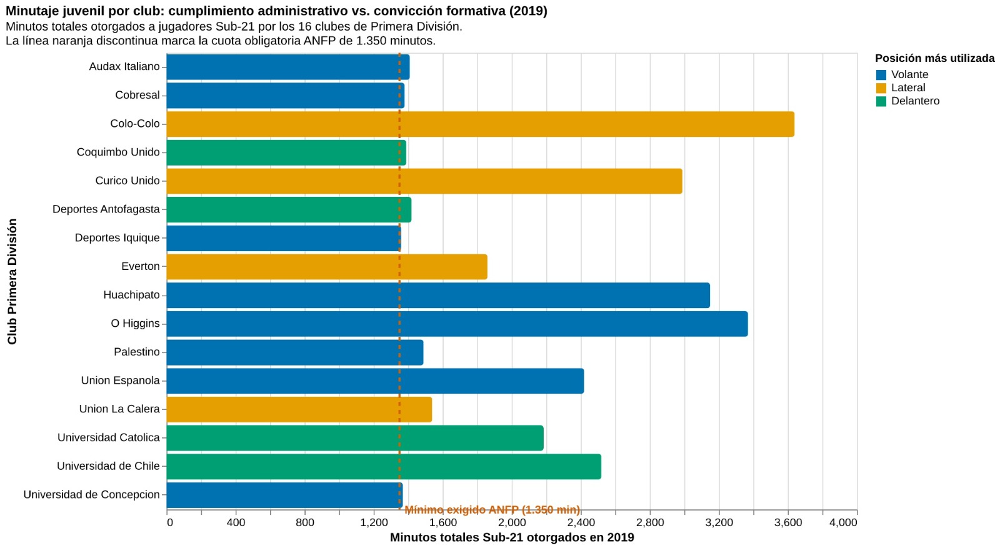

La oportunidad de jugar
En el fútbol chileno, la regla juvenil busca abrir una puerta al primer equipo. Pero una oportunidad reglamentaria no significa necesariamente que todos los clubes entreguen el mismo espacio a sus futbolistas jóvenes. Una base de trabajo con los minutos acumulados en 2019 por 16 instituciones de Primera División deja ver diferencias importantes y abre una pregunta: ¿qué nos dice realmente el minutaje sobre las posibilidades de formación?
En el conjunto de datos analizado, Colo-Colo aparece con 3.640 minutos, seguido de O'Higgins (3.370) y Huachipato (3.150). En el otro extremo figuran Deportes Iquique (1.360), Universidad de Concepción (1.370), Cobresal (1.380) y Coquimbo Unido (1.390). La distancia entre el primero y el último es de 2.280 minutos. Si estos registros se confirman, muestran que el uso de juveniles estuvo lejos de ser homogéneo.
Los 16 clubes, en una imagen

Explorar la visualización interactiva (requiere conexión a internet).
Una cifra no cuenta toda la historia
La referencia reglamentaria para 2019 era de 1.350 minutos. Dentro del CSV utilizado, siete clubes quedan bajo los 1.500 minutos y cinco se ubican menos de un 5 % por encima de esa cifra de referencia. Sin embargo, hay una precaución fundamental: los minutos totales acumulados por distintos jugadores de un plantel no necesariamente equivalen a los minutos reconocidos oficialmente para cumplir la norma. La línea de referencia del gráfico permite contextualizar magnitudes, pero por sí sola no certifica si un club cumplió o incumplió.
La distribución por posiciones también invita a mirar con más detalle. Según la clasificación incluida en la base, ocho equipos tienen a los volantes como posición predominante, cuatro a los laterales y cuatro a los delanteros. Sumados, los registros atribuidos a defensas y mediocampistas concentran aproximadamente el 70.5 % del minutaje de la muestra. Los arqueros registran apenas 90 minutos, todos asociados a Universidad de Chile en este conjunto de datos. Es una diferencia llamativa, aunque las cifras no permiten establecer por sí mismas las razones tácticas de cada entrenador.
¿Qué significa formar?
El contraste sugiere dos niveles de análisis distintos. Uno es cuantitativo: cuánto jugaron los jóvenes y en qué sectores de la cancha. El otro es formativo: si esa participación se tradujo en continuidad, aprendizaje o consolidación posterior. Para responder esta segunda pregunta se necesitan las trayectorias individuales, información sobre titularidades y suplencias, y registros oficiales comparables. Más minutos pueden reflejar oportunidades, pero no prueban una convicción institucional.
La desigualdad que dibuja esta base es un punto de partida, no un veredicto. Antes de sacar conclusiones definitivas, sus cifras deberán contrastarse con los datos oficiales de la ANFP, especialmente porque existen registros públicos de 2019 que difieren de los valores reunidos aquí. La pregunta que queda abierta conecta esta pieza con El mito del abismo: más allá de cumplir una regla, ¿qué clubes ofrecieron oportunidades que ayudaron a los futbolistas a construir una carrera?